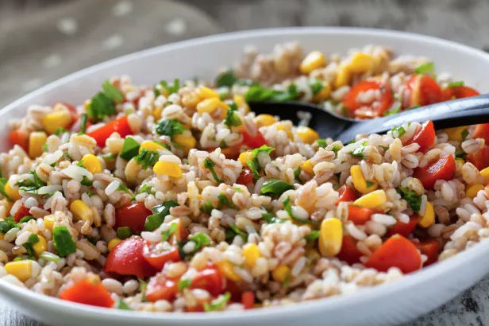

Barley Salad

Description
I created this salad, inspired by colonial farming methods, to celebrate the 350th anniversary of the first Jewish community in the United States. Serve cold for a delightful spring or summer salad.
It can be made in advance and served cold. Perfect for a Memorial Day picnic or Shabbat.
Ingredients
- large cloves of garlic, finely minced
- 1/4 cup finely chopped parsley
- 24 red grape tomatoes, cut in half horizontally
- 1 teaspoon minced fresh rosemary or 1/4 teaspoon dried
- 1/2 teaspoon cinnamon
- Pinch of cloves
- 1 jalapeno pepper, seeded and finely diced
- 1/4 cup extra virgin olive oil
- 1/2 teaspoon coarse kosher salt
- 2 cups frozen yellow corn, defrosted
- 1 cup frozen cut green beans, defrosted
- 3 scallions, finely sliced
- 1/4 cup roasted red pepper, jarred or fresh, diced
- 1 (15-ounce) can black beans, drained and rinsed
- 3/4 cup barley
- 4 cups water
- Salt and freshly ground pepper to taste
Steps
- Combine the first 10 ingredients in a large, glass serving bowl. Let marinate for at least 1/2 hour at room temperature.
- Defrost the corn and green beans. Discard any accumulated liquid.
- Have all of your remaining ingredients ready while you cook the barley.
- Bring the four cups water to a rolling boil. Add a pinch of salt and the barley. Stir to combine, cover, and reduce the heat to low. Cook barley for 40 minutes or until tender but not mushy.
- When the barley is done, quickly drain and pour it over the tomato mixture. Toss with the remaining ingredients. Add more salt and pepper if needed.